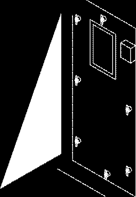
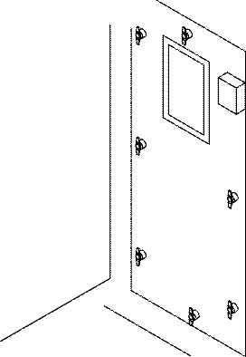
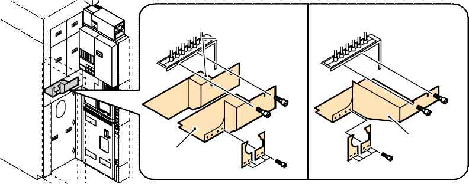

p.4
- 위험 가스 밸브를 잠그고 태그를 붙입니다.
- 메인 히터 전원을 끄려면:
- 전원을 끌 수 있을 때까지 수동으로 메인 히터 온도를 낮춥니다.
- 히터 스위치를 끕니다.
- 다음 히터가 실온에 있는지 확인합니다: 심한 화상을 방지하려면 유지보수를 하기 전에 히터를 실온으로 식히세요. 메인 히터 : WAVES 컨트롤러 온도 상태 화면 또는 EXCORE 미터 릴레이에서 확인합니다.
- 시스템을 완전히 종료합니다.
- 전원 박스 메인 차단기를 잠그고 태그를 붙입니다.
- 진공 라인 커버를 제거합니다.
- 청소기 커버를 제거합니다.



